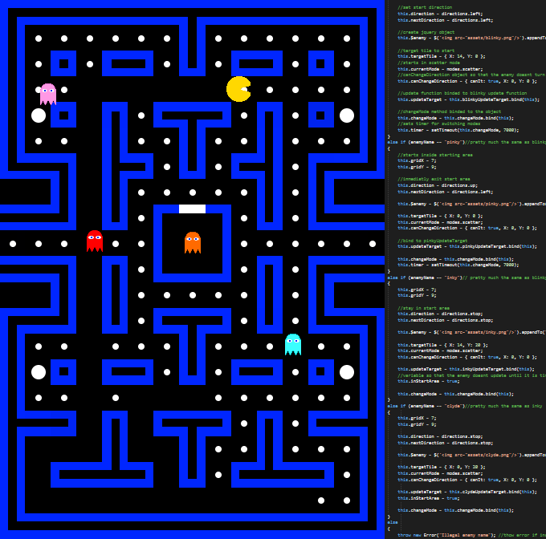

Pac-Man:
Recreated Pac-Man from scratch in JavaScript and JQuery. It is not built on any game engine, everything is made only using regular JS and JQuery. All the ghosts behave exactly how they do in the original game. It was Created for a four person group project where each person built a small web application to add to the website. The HTML and CSS for the main website was written by me as well.
What I worked on:
- Created movement system for player and ghosts so that they would always adhere to the correct path
- Score system was programmed to be just like the original game
- Programmed ghost AI so that each would behave as in the original game
- Created a binary map to store where the tiles and walls are in the game
- Designed game-loop for reading player input, calculating movements and collision, and displaying the updated visuals
- Pellet objects optimized so as not to lag the computer


Tower Defense:
A Tower Defense game that was built from the ground up in C++ using only a small library to display textures. Developed by a team of 4 programmers and 2 artists.
What I worked on:
- Programmed tower behavior
- Collision programming
- Tower upgrades
- Player health
- Camera Movement and boundries
- Currency System
PHP/SQL Login:
Created a secure Log-In system using PHP and SQL. Passwords are securely encrypted in the SQL database using the MD5 algorithm. You can choose the "remember me" option to save your login info in cookies and you will be logged in next time you load the page. Logging out will delete the cookie. Click the link icon below to try it out! Username: JHibbs Password: 1234

What I worked on:
- Created front-end that takes the username and password
- A MySQL server holds the username and password information
- Designed so that the passwords are never in plain text to remain secure
ChatStats:
An Android Application that goes through your text messages and gathers the stats. Tells you what friends you text the most, who texts you the most. Shows the number of messages given a certain timeframe. As well as a search feature that shows how many of your texts contains a certain phrase.
What I worked on:
- Using queries and cursors, I extracted the SMS data from the phone
- Created objects to store the statistics for each person in the contact list
- Wrote XML to display the statistics, as well as get search parameters from the user